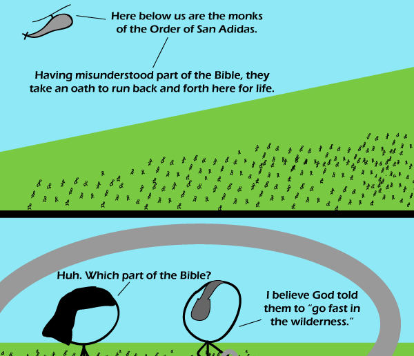

Comic JK 645
When I Feel Like It
⇤
<
?
>
⇥

⇤
<
?
>
⇥
Forum
.
RSS
.
Digg
.
Facebook
.
Reddit
.
Twitter
.
Stumbleupon
Enter your thoughts on number 645 here. Please, no spamming, trolling, phreaking or fasting. Your mother goes fast around dorky college boys. But it's go fast _in the wilderness._ Going fast in a helicopter is a different religion.drgrgrw of this comic. >The characters are airheads. Badum-tish >>I hear they're all airheads in Badum-tish. >It's simple really - helicopters are opaque unless really close. >> Actually, the transparency follows the law of plot. LOL @ Order of San Adidas >Yes. Pun time. He's a real sneaker. >>I see what you did there. I'm sure Ricky Bobby would be in this order. "I wanna go fast" I seriously love how the helicopter is drawn, Its looks so much like an actual helicopter considering its just a random blob and a few lines > I particularly like the landing gear. I believe in Faith, Hop, and Charity. And the greatest of these is Hop. -I always liked Charity best... but then, I've always had a thing for Redheads... Nice, thank you!